Contents
- Données projet nettoyées
- histogramme variable Age
- camembert variable Drogue
- histogramme variable Genre
- Boites à moustache
- Carte
- Régression multiple Drogue en fonction de Comportement
- Régression multiple Comportement en fonction de Drogue
- Diagnostic régression
- ACP
- Projections des nuages de points
- Projections des variables
- Régression avec données de l'ACP
- Régressions sans valeurs aberrantes (sans et avec ACP)
- Comptage des apparitions de 0,1,2 etc.. pour chaque drogue
- Test du chi2
- Test corrélation Drogue
Données projet nettoyées
close all clear all load('Project_sans_Semer.mat')
histogramme variable Age
figure(1)
C = categorical(Age,[-0.95197 -0.07854 0.49788 1.09449 1.82213 2.59171],{'18-24','25-34','35-44','45-54','55-64','65+'});
h = histogram(C,'BarWidth',0.5);
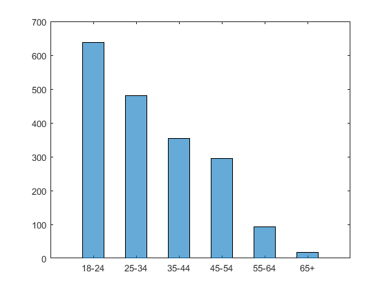 camembert variable Drogue
figure(2)
X = [sum(Alcool) sum(Amphet) sum(Amyl) sum(Benzos) sum(Caff) sum(Cannabis) sum(Choc) sum(Coke) sum(Crack) sum(Ecstasy) sum(Heroin) sum(Ketamine) sum(Legalh), sum(LSD) sum(Meth) sum(Mushrooms) sum(Nicotine) sum(VSA)];
labels= {'Alcohol','Amphet','Amyl','Benzos','Caff','Cannabis','Choc','Coke','Crack','Ecstasy','Heroin','Ketamine','Legalh','LSD','Meth','Mushrooms','Nicotine','VSA'};
p = pie(X,labels);
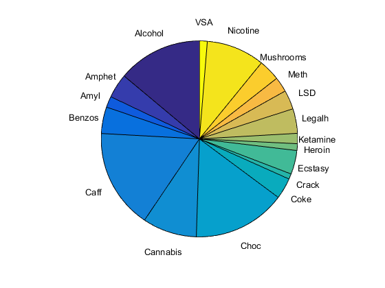 n=size(Age); %D = categorical(Gender,[0.48246 -0.48246],{'Femme','Homme'}) %h = histogram(D,'BarWidth',0.5)
histogramme variable Genre
Hommes=[]; Femmes=[]; AgeHomme=[]; AgeFemme=[]; for i=1:n if Gender(i)<0 Hommes(i)=1; AgeHomme(i)=Age(i); else Femmes(i)=1; AgeFemme(i)=Age(i); end end figure(3) D=categorical(AgeHomme,[-0.95197 -0.07854 0.49788 1.09449 1.82213 2.59171],{'18-24','25-34','35-44','45-54','55-64','65+'}); E=categorical(AgeFemme,[-0.95197 -0.07854 0.49788 1.09449 1.82213 2.59171],{'18-24','25-34','35-44','45-54','55-64','65+'}); histogram(D,'BarWidth',0.5);hold on histogram(E,'BarWidth',0.5,'facealpha',.4); legend('Hommes','Femmes', 'Location', 'NE')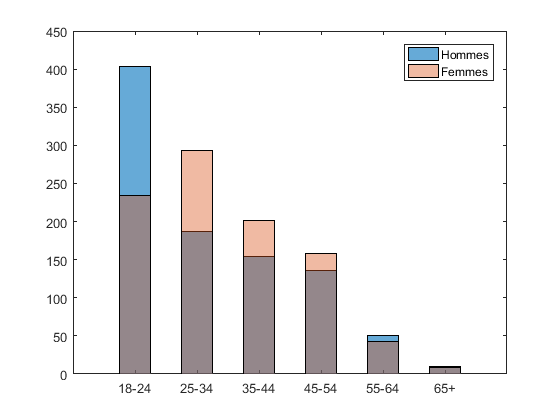
Boites à moustache
Drogue = [Alcool Amphet Amyl Benzos Caff Cannabis Choc Coke Crack Ecstasy Heroin Legalh LSD Meth Mushrooms Nicotine VSA]; F = []; t= 1; figure(4) boxplot(sum(Drogue')) for i=1:n if Age(i)== -0.95197 F(t)= sum(Drogue(i,:)); t = t+1; end end boxplot(F); hold on G=[]; t=1; for i=1:n if Age(i)== -0.07854 G(t)= sum(Drogue(i,:)); t = t+1; end end figure(5) boxplot(G) H=[]; t=1; for i=1:n if Age(i)== 0.49788 H(t)= sum(Drogue(i,:)); t = t+1; end end figure(6) boxplot(H) J=[]; t=1; for i=1:n if Age(i)== 1.09449 J(t)= sum(Drogue(i,:)); t = t+1; end end figure(7) boxplot(J) K=[]; t=1; for i=1:n if Age(i)== 1.82213 K(t)= sum(Drogue(i,:)); t = t+1; end end figure(8) boxplot(K) L=[]; t=1; for i=1:n if Age(i)== 2.59171 L(t)= sum(Drogue(i,:)); t = t+1; end end figure(9) boxplot(L)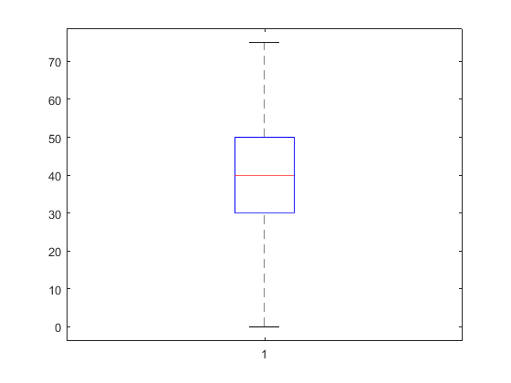 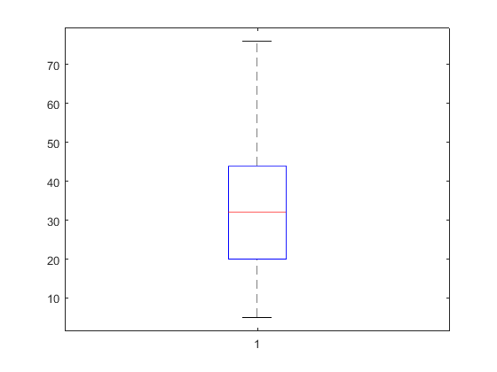 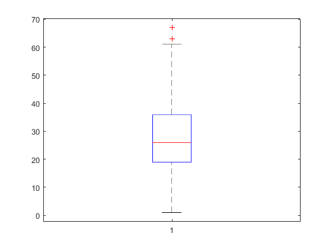 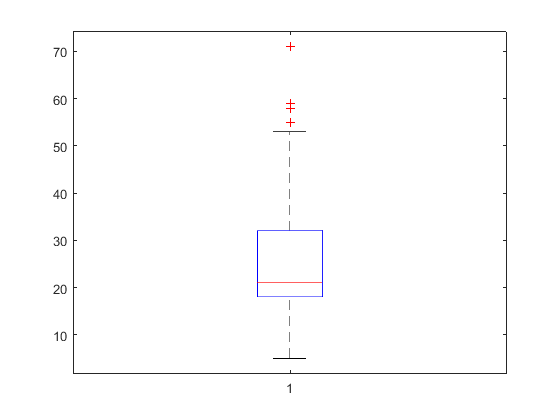 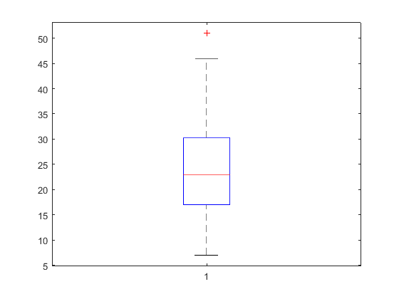 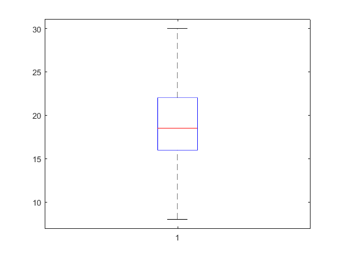
Carte
figure(1) worldmap world load coastlines [latcells, loncells] = polysplit(coastlat, coastlon); % numel(latcells) plotm(coastlat, coastlon) Australia = (Country==-0.09765); Canada = (Country==0.24923); NewZealand = (Country==-0.46841); Ireland = (Country==0.21128); UK = (Country==0.96082); USA = (Country==-0.57009); X = [sum(Australia) sum(Canada) sum(NewZealand) sum(Ireland) sum(UK) sum(USA)] label = struct('name', {'Australia.shp','Canada.shp','NZ.shp','Ireland.shp','UK.shp','USA.shp'}) for i=1:6 if X(i)> 500 geoshow(label(i).name, 'FaceColor', 'red'); else if X(i)>50 geoshow(label(i).name, 'FaceColor', [1 0.5 0]); %orange else geoshow(label(i).name, 'FaceColor', 'green');
end end end
Régression multiple Drogue en fonction de Comportement
Drogue = [Alcool Amphet Amyl Benzos Caff Cannabis Choc Coke Crack Ecstasy Heroin Ketamine Legalh LSD Meth Mushrooms Nicotine VSA]; Comportement =[Nscore Escore Oscore Ascore Cscore Impulsive SS]; for i=1:18 y = Drogue(:,i); X = [Comportement ones(size(y))]; a = (X'*X)\(X'*y); e = y-X*a; SCT =sum((y-mean(y)).^2); SCM =sum((X*a-mean(y)).^2); % Variance Expliquée SCR = e'*e; % Variance totale R2 = 1 - SCR/SCT % coefficient de détermination R2 end
R2 =
0.0202
R2 =
0.1620
R2 =
0.0472
R2 =
0.1523
R2 =
0.0066
R2 =
0.3145
R2 =
0.0043
R2 =
0.1535
R2 =
0.0568
R2 =
0.1928
R2 =
0.0909
R2 =
0.0818
R2 =
0.2333
R2 =
0.2073
R2 =
0.1111
R2 =
0.2201
R2 =
0.1302
R2 =
0.0844
Régression multiple Comportement en fonction de Drogue
for i=1:7 y = Comportement(:,i); X = [Drogue ones(size(y))]; a = (X'*X)\(X'*y); e = y-X*a; SCT =sum((y-mean(y)).^2); SCM =sum((X*a-mean(y)).^2); % Variance Expliquée SCR = e'*e; % Variance totale R2 = 1 - SCR/SCT % coefficient de détermination R2 end
R2 =
0.0925
R2 =
0.0487
R2 =
0.2205
R2 =
0.0620
R2 =
0.1173
R2 =
0.1477
R2 =
0.2810
Diagnostic régression
Drogue = [Alcool Amphet Amyl Benzos Caff Cannabis Choc Coke Crack Ecstasy Heroin Ketamine Legalh LSD Meth Mushrooms Nicotine VSA]; Comportement =[Nscore Escore Oscore Ascore Cscore Impulsive SS]; %Perturbateur = [Ketamine Cannabis Mushrooms LSD VSA]; %Depresseur = [Alcool Heroin Benzos]; %Stimulant = [Coke Ecstasy Amphet Amyl Choc Crack Caff Legalh Meth Nicotine]; n=length(Drogue); X=[ones(n,1) Drogue]; for i=1:7 y=Comportement(:,i);%ici y prend les comportements de 1 à 7 [n,p] =size(X); a = (X'*X)\(X'*y); e = y-X*a; s2 = e'*e/(n-p); % Calculs des résidus standardisés R2 = 1 - e'*e/sum((y-mean(y)).^2); h =diag(X*((X'*X)\(X'))); c = h./(1-h).^2/p.*e.^2/(e'*e); % Contribution figure(i+9) subplot(1,2,1) plot(y,c,'o')% pour obtenir le graphe des contributions de chaque comportement hold off xlabel('Comportement'); ylabel('contribution'); title('Contributions en fonction du comportement'); hold off subplot(1,2,2) plot(y,e,'o')%graphe des erreurs pour chaque comportement hold on xlabel('Comportement'); ylabel('erreur'); title('Erreurs en fonction du comportement') end;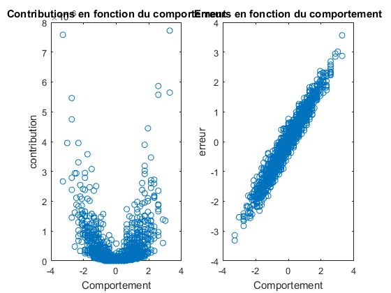 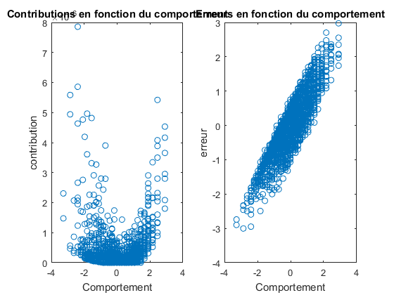 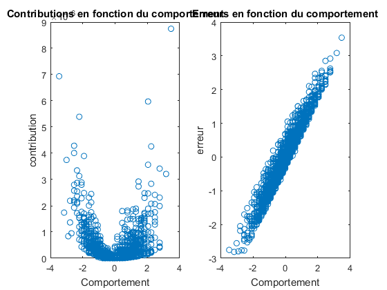 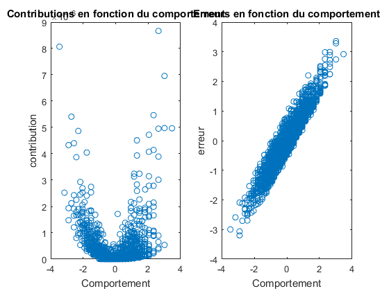 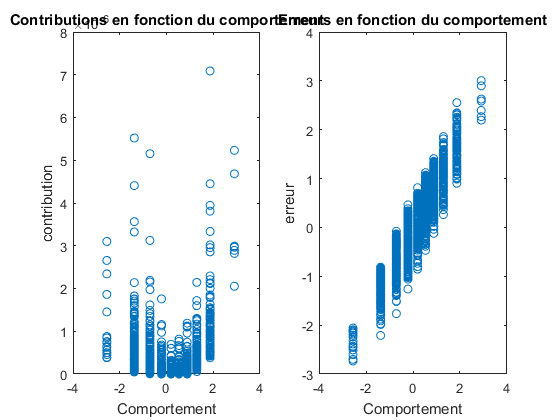 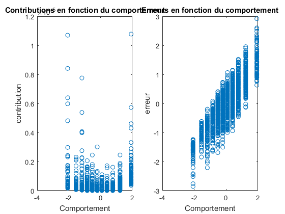
ACP
Drogue = [Alcool Amphet Amyl Benzos Caff Cannabis Choc Coke Crack Ecstasy Heroin Ketamine Legalh LSD Meth Mushrooms Nicotine VSA]; Comportement =[Nscore Escore Oscore Ascore Cscore Impulsive SS]; % figure(1) % plot(Drogue,Comportement(:,1),'or'); [n,p] = size(Drogue); Xc= Drogue - ones(n,1)*mean(Drogue); Xn = Xc./ (ones(n,1)*std(Drogue,1)); C = (Xn'*Xn)/n; [V L] =eig(C); V; %vecteurs propres diag(L);%valeurs propres vp = sort(diag(L),'descend'); vpc = 100*cumsum(vp)/sum(vp); %pourcentage information [vp vpc]
ans =
6.0063 33.3683
1.5702 42.0916
1.2573 49.0766
1.0349 54.8260
0.9802 60.2716
0.8817 65.1698
0.8070 69.6530
0.7836 74.0061
0.7588 78.2219
0.5789 81.4379
0.5379 84.4262
0.5099 87.2587
0.4753 89.8995
0.4430 92.3606
0.4140 94.6605
0.3485 96.5966
0.3369 98.4682
0.2757 100.0000
Projections des nuages de points
U = Xn*V; V = V(:,end:-1:1); L = L(end:-1:1,end:-1:1); U = U(:,end:-1:1); %tri ordre décroissant figure(17) plot3(U(:,1),U(:,2),U(:,3),'o'); %3 premières composantes principales xlabel('axe 17'); ylabel('axe 16'); zlabel('axe 15'); title('Representation du nuage avec trois axes de l''ACP') figure(18) plot3(U(:,1),U(:,3),U(:,2),'o'); %3 premières composantes principales xlabel('axe 17'); ylabel('axe 15'); zlabel('axe 16'); title('Representation du nuage avec trois axes de l''ACP')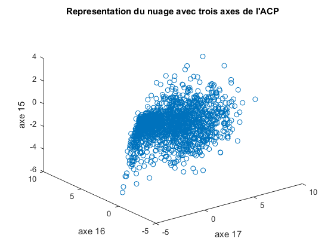 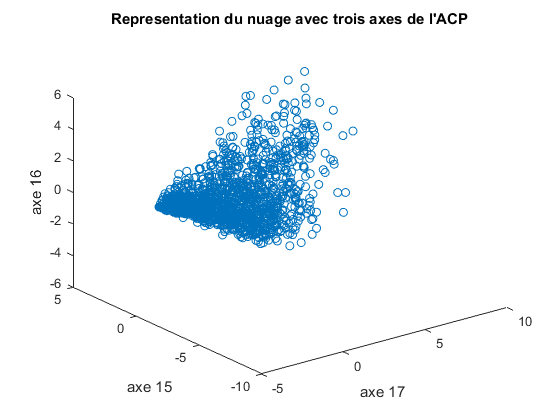
Projections des variables
Vn = V*sqrt(L)/sqrt(n); figure(19) subplot(2,2,1) title('Représentation des variables avec deux axes de l''ACP') plot(Vn(:,1),Vn(:,2),'*');hold on for i=1:p text(Vn(i,1),Vn(i,2),['v' num2str(i)]); end xlabel('axe 17'); ylabel('axe 16'); title('Représentation des variables avec deux axes de l''ACP') hold off subplot(2,2,2) plot(Vn(:,1),Vn(:,3),'*'); hold on for i=1:p text(Vn(i,1),Vn(i,3),['v' num2str(i)]); end xlabel('axe 17'); ylabel('axe 15'); title('Représentation des variables avec deux axes de l''ACP') hold off subplot(2,2,3.5) plot(Vn(:,2),Vn(:,3),'*');hold on for i=1:p text(Vn(i,2),Vn(i,3),['v' num2str(i)]); end xlabel('axe 16'); ylabel('axe 15'); title('Représentation des variables avec deux axes de l''ACP') hold off;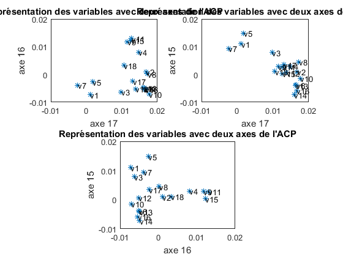
Régression avec données de l'ACP
y=Comportement; [n,o]=size(y); Yn = (y - ones(n,1)*mean(y))./(ones(n,1)*std(y)); [b,f] = eig(Yn'*Yn); vp = sort(diag(f),'descend'); % on ordonne les valeurs propres [vp 100*cumsum(vp)/sum(vp)] I = Yn*b; Bn = (b*sqrt(f(1:o,1:o))/sqrt(n)); L = I*Bn';
ans =
1.0e+03 *
4.2142 0.0321
3.4191 0.0581
1.6557 0.0707
1.2596 0.0803
1.0470 0.0883
0.8886 0.0951
0.6478 0.1000
X=Drogue; [n,p]=size(X); Xn = (X - ones(n,1)*mean(X))./(ones(n,1)*std(X)); [v,d] = eig(Xn'*Xn); vp = sort(diag(d),'descend'); % on ordonne les valeurs propres [vp 100*cumsum(vp)/sum(vp)] U = Xn*v; Vn = (v*sqrt(d(1:p,1:p))/sqrt(n)); M = U*Vn';
ans =
1.0e+04 *
1.1268 0.0033
0.2946 0.0042
0.2359 0.0049
0.1941 0.0055
0.1839 0.0060
0.1654 0.0065
0.1514 0.0070
0.1470 0.0074
0.1424 0.0078
0.1086 0.0081
0.1009 0.0084
0.0956 0.0087
0.0892 0.0090
0.0831 0.0092
0.0777 0.0095
0.0654 0.0097
0.0632 0.0098
0.0517 0.0100
for i=1:7 Xl=[ones(n,1) M]; yl=L(:,i); [al, s2, R2, dv] = ma_reg(Xl,yl); plot(yl,dv(:,1),'o') R2 end
R2 =
0.1181
R2 =
0.0530
R2 =
0.2619
R2 =
0.1075
R2 =
0.1728
R2 =
0.2432
R2 =
0.3150
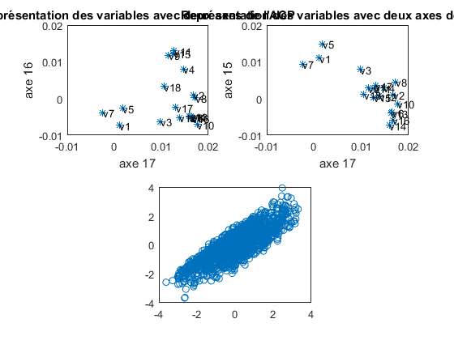 Régressions sans valeurs aberrantes (sans et avec ACP)
for i=1:7 n=length(Drogue); X=[ones(n,1) Drogue]; y=Comportement(:,i); [al, s2, R21, dv] = ma_reg(X,y); R21 plot(X,y,'o') j=1; k=1; xs=[]; ys=[]; for i=1:length(X) if dv(i,3)<1.5e-06 xs(j,:)=X(i,:); ys(j,:)=y(i); j=j+1; end end [al, s2, R22, dv] = ma_reg(xs,ys); R22 X=xs(:,2:19); [n,p]=size(X); Xn = (X - ones(n,1)*mean(X))./(ones(n,1)*std(X)); [v,d] = eig(Xn'*Xn); vp = sort(diag(d),'descend'); % on ordonne les valeurs propres [vp 100*cumsum(vp)/sum(vp)]; U = Xn*v; Vn = (v*sqrt(d(1:p,1:p))/sqrt(n)); M = U*Vn'; Xl=[ones(n,1) M]; [al, s2, R23, dv] = ma_reg(Xl,ys); plot(ys,dv(:,1),'o') R23 end
R21 =
0.0925
R22 =
0.1301
R23 =
0.1301
R21 =
0.0487
R22 =
0.0504
R23 =
0.0504
R21 =
0.2205
R22 =
0.2548
R23 =
0.2548
R21 =
0.0620
R22 =
0.0766
R23 =
0.0766
R21 =
0.1173
R22 =
0.1597
R23 =
0.1597
R21 =
0.1477
R22 =
0.1724
R23 =
0.1724
R21 =
0.2810
R22 =
0.3468
R23 =
0.3468
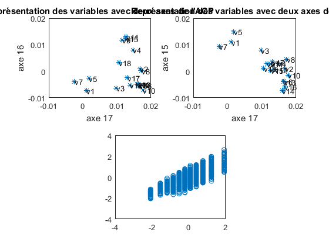 Comptage des apparitions de 0,1,2 etc.. pour chaque drogue
Drogue = [Alcool Amphet Amyl Benzos Caff Cannabis Choc Coke Crack Ecstasy Heroin Ketamine Legalh LSD Meth Mushrooms Nicotine VSA]; Compte=0; for i=1:1877 if Drogue(i,1)==0 %par exemple Compte=Compte+1; end end Compte
Compte =
33
Test du chi2
O = [33 2272 999 27 445 2658 1020 3088 1092 1069 2424 428 1452
34 440 116 10 209 227 112 111 29 257 247 193 199
68 477 230 24 276 376 232 231 195 175 354 203 133
197 287 234 59 263 316 275 194 321 213 420 184 59
284 99 119 106 433 107 154 64 109 96 164 106 13
758 75 84 271 865 49 63 49 64 55 87 156 14
503 104 95 1380 1263 21 21 17 67 12 76 607 7];
m =sum(O);
n =sum(O,2);
T = n*m/sum(n),
D =sum(sum((O-T).^2./T))
ddl = (length(n)-1)*(length(m)-1)
pval = 1 - cdf('chi2',D,ddl)
T =
1.0e+03 *
Columns 1 through 7
0.9443 1.8887 0.9443 0.9443 1.8887 1.8887 0.9443
0.1213 0.2425 0.1213 0.1213 0.2425 0.2425 0.1213
0.1651 0.3303 0.1651 0.1651 0.3303 0.3303 0.1651
0.1678 0.3356 0.1678 0.1678 0.3356 0.3356 0.1678
0.1029 0.2059 0.1029 0.1029 0.2059 0.2059 0.1029
0.1438 0.2876 0.1438 0.1438 0.2876 0.2876 0.1438
0.2317 0.4634 0.2317 0.2317 0.4634 0.4634 0.2317
Columns 8 through 13
1.8887 0.9443 0.9443 1.8977 0.9443 0.9443
0.2425 0.1213 0.1213 0.2437 0.1213 0.1213
0.3303 0.1651 0.1651 0.3319 0.1651 0.1651
0.3356 0.1678 0.1678 0.3372 0.1678 0.1678
0.2059 0.1029 0.1029 0.2069 0.1029 0.1029
0.2876 0.1438 0.1438 0.2890 0.1438 0.1438
0.4634 0.2317 0.2317 0.4656 0.2317 0.2317
D =
2.2387e+04
ddl =
72
pval =
0
Test corrélation Drogue
Drogue = [Alcool Amphet Amyl Benzos Caff Cannabis Choc Coke Crack Ecstasy Heroin Ketamine Legalh LSD Meth Mushrooms Nicotine VSA];
y = Drogue(:,1); %par exemple
X = [Drogue(:,2:17) ones(size(y))];
[a, s2, R2, dv] = ma_reg(X,y);
R2
R2 =
0.0451